Computer & Database Security
Penjelasan dibuat sederhana. Tiap istilah punya arti singkat, contoh, dan cara hafal. Gambar diambil dari slide dosen.
A. Apa itu keamanan komputer?
Cybersecurity = melindungi informasi yang disimpan, dikirim, dan diproses di jaringan komputer, perangkat digital, dan internet. Caranya bisa lewat aturan organisasi (kebijakan dan prosedur) dan lewat teknik (enkripsi dan protokol komunikasi yang aman).
| Istilah | Artinya (versi gampang) |
|---|---|
| Information security | Menjaga informasinya supaya tetap rahasia, utuh, dan tersedia (CIA). Bisa ditambah sifat lain: asli, bisa dilacak, tidak bisa disangkal, dan dapat diandalkan. |
| Network security | Menjaga jaringan dan layanannya dari perubahan, perusakan, atau kebocoran tanpa izin, dan memastikan jaringan bekerja benar tanpa efek samping berbahaya. |
B. Tujuan keamanan: CIA Triad + 2 tambahan
CIA di sini bukan badan intelijen Amerika. CIA adalah singkatan dari tiga tujuan utama keamanan: Confidentiality, Integrity, Availability. Disebut triad karena ada tiga. Lalu slide dosen menambah dua lagi: Authenticity dan Accountability. Jadi totalnya 5 tujuan.
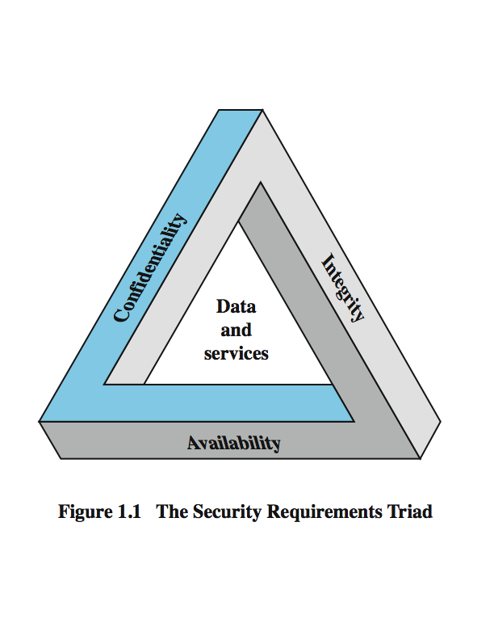
| # | Tujuan | Arti singkat | Seperti apa di kehidupan sehari-hari | Kalau dilanggar |
|---|---|---|---|---|
| 1 | Confidentiality (kerahasiaan) | Data rahasia tidak boleh dibaca orang yang tidak berhak. | Surat dalam amplop tertutup: hanya penerima yang boleh membuka. | Nilai atau data pribadi bocor ke orang lain. |
| 2 | Integrity (keutuhan) | Data dan program hanya berubah lewat cara yang sah dan oleh orang yang berhak. | Surat tidak boleh diubah isinya di tengah jalan. | Data pasien diubah, nilai dipalsukan. |
| 3 | Availability (ketersediaan) | Sistem bisa dipakai saat dibutuhkan oleh yang berhak. | Toko buka saat kamu datang. | Website mati karena diserang, layanan tidak bisa dipakai. |
| 4 | Authenticity (keaslian) | Pesan atau pengguna itu asli dan bisa dibuktikan: orangnya memang yang dia klaim, dan data memang dari sumber tepercaya. | KTP atau sidik jari: membuktikan kamu benar-benar kamu. | Orang lain menyamar sebagai kamu. |
| 5 | Accountability (dapat dipertanggungjawabkan) | Setiap tindakan bisa dilacak ke satu pelaku yang jelas. | CCTV dan catatan log: siapa melakukan apa dan kapan. | Pelaku bisa menyangkal, tidak ada bukti. |
Dua bagian kecil di dalamnya
| Tujuan | Bagian | Arti |
|---|---|---|
| Confidentiality | Data confidentiality | data rahasia tidak sampai ke orang tak berhak |
| Confidentiality | Privacy | setiap orang mengendalikan informasi pribadinya: apa yang boleh dikumpulkan dan disimpan |
| Integrity | Data integrity | data dan program hanya berubah dengan cara yang sah |
| Integrity | System integrity | sistem bekerja sesuai fungsinya tanpa diganggu, sengaja maupun tidak sengaja |
Contoh kebutuhan keamanan (dari slide, versi singkat)
| Aspek | Tinggi | Sedang | Rendah |
|---|---|---|---|
| Confidentiality | Nilai mahasiswa (hanya boleh dilihat mahasiswa, orang tua, dan pemberi kerja bila perlu) | Data pendaftaran mahasiswa | Informasi direktori yang sering sudah publik |
| Integrity | Info alergi pasien rumah sakit: dokter harus yakin datanya benar. Kalau perawat memalsukan, data dipulihkan dan pelakunya dilacak. | Data registrasi newsgroup online | Polling online anonim (salah sedikit tidak masalah) |
| Availability | Sistem autentikasi (kalau tidak bisa login, pelanggan rugi uang) | Website publik universitas (tidak kritis, hanya memalukan) | Pencarian direktori telepon online (ada sumber lain) |
Contoh ancaman pada tiap aspek
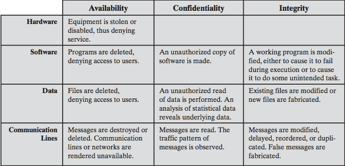
Cara baca tabel: pilih baris (apa yang diserang) lalu kolom (aspek yang rusak). Contoh: Data + Confidentiality = ada orang tak berhak membaca file data.
C. OSI Security Architecture: Serangan, Layanan, Alat
Ini kerangka untuk memikirkan keamanan lewat tiga hal:
| Istilah | Artinya | Analogi rumah |
|---|---|---|
| Security attack (serangan) | tindakan yang membahayakan keamanan | maling mencoba masuk |
| Security service (layanan) | apa yang dilindungi/dijamin | "rumah harus aman dari maling" |
| Security mechanism (alat) | cara/teknik untuk menjalankan layanan | kunci, gembok, alarm |
1. Security attacks (serangan)
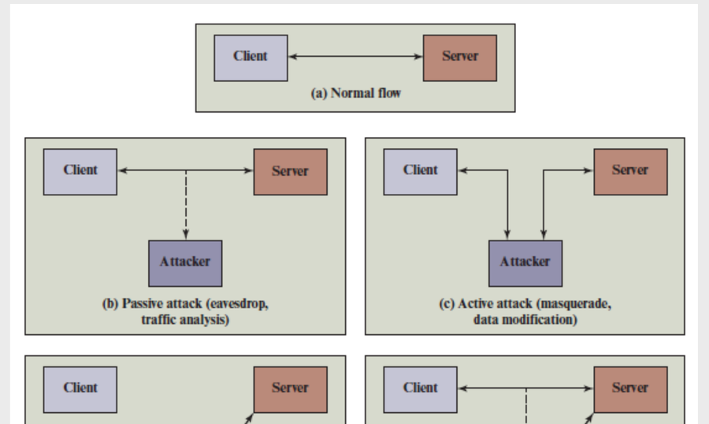
| Jenis | Serangan | Artinya (gampang) |
|---|---|---|
| Passive (cuma mengintip, data tidak diubah, sulit ketahuan) | Release of message contents | isi pesan (telepon, email, file) dibaca orang yang tidak berhak |
| Traffic analysis | isi pesan sudah disamarkan (dienkripsi), tapi penyerang melihat pola: siapa kirim ke siapa, seberapa sering. Seperti melihat banyak surat keluar-masuk walau tidak bisa membacanya. | |
| Active (mengubah data atau membuat data palsu) | Masquerade | satu pihak menyamar jadi pihak lain |
| Replay | menangkap data lalu mengirim ulang untuk efek tidak sah (contoh: merekam perintah "transfer" lalu mengirimnya lagi) | |
| Modification of messages | mengubah isi pesan. Contoh: man-in-the-middle, penyerang di tengah mengubah data antara client dan server | |
| Denial of service (DoS) | membuat layanan tidak bisa dipakai (dibanjiri permintaan) |
2. Security services (layanan): 6 buah
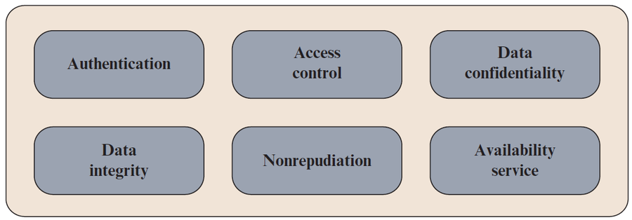
| Layanan | Artinya |
|---|---|
| Authentication | memastikan komunikasi asli: penerima yakin pesan benar dari sumber yang diklaim |
| Access control | membatasi siapa yang boleh mengakses host dan aplikasi lewat jalur komunikasi |
| Data confidentiality | melindungi data yang dikirim dari serangan pasif (agar tidak dibaca) |
| Data integrity | data sampai utuh, tidak berubah |
| Nonrepudiation | pengirim atau penerima tidak bisa menyangkal. Penerima bisa membuktikan siapa pengirimnya, dan pengirim bisa membuktikan siapa penerimanya. |
| Availability service | sistem atau sumber daya bisa dipakai saat diminta oleh yang berhak, sesuai spesifikasi |
3. Security mechanisms (alat): 8 buah
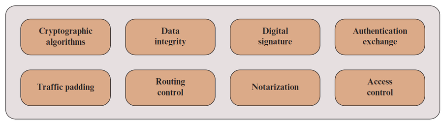
| Mekanisme | Fungsi (gampang) |
|---|---|
| Cryptographic algorithms | algoritma enkripsi untuk menyamarkan data |
| Data integrity | berbagai cara menjamin satu data atau aliran data tidak berubah |
| Digital signatures | "tanda tangan digital" yang ditempel pada data. Penerima bisa membuktikan sumber dan keutuhan data, dan melindungi dari pemalsuan |
| Authentication exchange | memastikan identitas lewat pertukaran informasi (mis. tanya-jawab rahasia) |
| Traffic padding | menyisipkan bit tambahan ke aliran data supaya traffic analysis gagal |
| Routing control | memilih rute yang aman, dan boleh ganti rute kalau dicurigai ada pelanggaran |
| Notarization | memakai pihak ketiga tepercaya (seperti notaris) untuk menjamin sifat tertentu dari pertukaran data |
| Access control | mekanisme yang menegakkan hak akses ke sumber daya |
D. Attack surface dan attack tree
Attack surface = semua titik lemah yang bisa dijangkau dan dimanfaatkan penyerang. Bayangkan pintu dan jendela rumah: makin banyak, makin banyak jalan masuk. Kalau permukaan diperkecil, tugas penyerang makin sulit. Contoh dari slide: port terbuka di server web, layanan di dalam firewall, kode yang memproses email/XML/dokumen, antarmuka SQL dan form web, serta karyawan yang bisa kena social engineering.
| Jenis | Titik lemahnya di mana | Contoh |
|---|---|---|
| Network | jaringan perusahaan, WAN, internet (fokus: software web server) | port terbuka |
| Software | kode aplikasi, utilitas, sistem operasi | bug di form web |
| Human | manusia: social engineering, salah manusia, orang dalam yang dipercaya | karyawan tertipu email palsu |
Attack tree = diagram pohon yang menggambarkan cara-cara mencapai satu tujuan serangan. Tujuan serangan ada di akar (paling atas). Cabangnya adalah langkah-langkah (sub-tujuan), dan tiap sub-tujuan bisa punya cabang lagi.
| Node | Artinya | Contoh |
|---|---|---|
| AND | semua anaknya harus tercapai | mencuri uang di brankas: harus dapat kunci DAN masuk ruangan |
| OR | salah satu anaknya cukup | masuk ruangan: lewat pintu ATAU jendela |
Cabang bisa diberi nilai (tingkat kesulitan, biaya) supaya serangan bisa dibandingkan. Gunanya: membantu mendesain sistem dan memilih countermeasure.
Contoh di slide: attack tree Internet banking
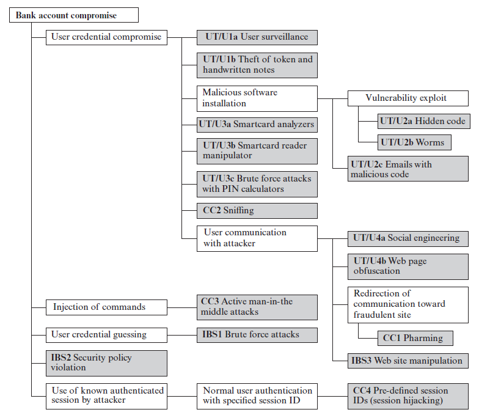
| Sasaran serangan | Artinya |
|---|---|
| UT/U (User terminal and user) | perangkat pengguna (termasuk token/kartu) dan tindakan penggunanya |
| CC (Communications channel) | jalur komunikasi |
| IBS (Internet banking server) | serangan offline ke server bank |
| Strategi serangan | Contoh |
|---|---|
| User credential compromise | mengintip PIN, mencuri token atau catatan tulisan tangan |
| Injection of commands | menyadap komunikasi antara terminal pengguna dan server |
| User credential guessing | brute force: mencoba banyak username dan password acak |
| Security policy violation | melanggar kebijakan keamanan bank |
| Use of known authenticated session | memakai session ID yang sudah dikenal setelah korban login, lalu menyamar sebagai korban |
E. Model keamanan jaringan
Keamanan dibutuhkan ketika data yang dikirim perlu dilindungi dari lawan (opponent). Semua teknik keamanan punya 2 komponen:
- Transformasi pada informasi yang dikirim. Contoh: enkripsi (membuat pesan acak sehingga tak terbaca lawan) atau menambah kode dari isi pesan untuk memverifikasi pengirim.
- Informasi rahasia yang dipakai bersama oleh dua pihak dan tidak diketahui lawan. Contoh: kunci enkripsi.
Ada 4 tugas untuk merancang layanan keamanan:
| # | Tugas |
|---|---|
| 1 | Merancang algoritma untuk transformasi keamanan (lawan tidak boleh bisa mengalahkannya). |
| 2 | Membuat informasi rahasia (kunci) untuk algoritma itu. |
| 3 | Membuat cara mendistribusikan dan berbagi informasi rahasia. |
| 4 | Menentukan protokol yang dipakai dua pihak, memakai algoritma dan informasi rahasia itu. |
F. Istilah penting
Bayangkan rumah untuk memahami istilah-istilah ini:
| Istilah | Artinya | Contoh rumah |
|---|---|---|
| Asset | yang harus dilindungi: data, layanan, kemampuan sistem, perangkat, atau fasilitas | isi rumah |
| Vulnerability | kelemahan pada sistem | jendela tidak dikunci |
| Threat | potensi bahaya yang bisa memanfaatkan kelemahan | ada maling di sekitar |
| Attack | serangan nyata dari ancaman yang cerdas | maling benar-benar masuk |
| Adversary | pihak yang menyerang atau menjadi ancaman | si maling |
| Risk | perkiraan kerugian: peluang ancaman memanfaatkan kelemahan tertentu dengan akibat merugikan | kemungkinan rugi karena jendela terbuka |
| Countermeasure | tindakan, alat, atau prosedur untuk mengurangi ancaman, kelemahan, atau serangan: mencegah, memperkecil kerugian, atau mendeteksi dan melaporkan | gembok, alarm |
| Security policy | kumpulan aturan dan praktik untuk menjaga keamanan sistem | aturan rumah: kunci pintu jam 9 |
Akibat ancaman (threat consequences): 4 kelompok
| Kelompok | Jenis | Artinya |
|---|---|---|
| Unauthorized disclosure (bocor) | Exposure | data sensitif langsung dibuka ke pihak tak berhak |
| Interception (di slide tertulis "Attack") | pihak tak berhak langsung mengakses data yang sedang dikirim | |
| Inference | menyimpulkan data sensitif secara tidak langsung, dari ciri atau hasil sampingan komunikasi | |
| Intrusion | menembus pengamanan sistem untuk mengakses data sensitif | |
| Deception (tipu) | Masquerade | menyamar sebagai pihak yang berhak |
| Falsification | data palsu menipu pihak yang berhak | |
| Repudiation | menyangkal tanggung jawab atas suatu tindakan | |
| Disruption (ganggu) | Incapacitation | menghentikan sistem dengan mematikan satu komponen |
| Corruption | mengubah fungsi atau data sehingga sistem bekerja salah | |
| Obstruction | menghambat jalannya layanan | |
| Usurpation (rebut) | Misappropriation | mengambil alih kendali sumber daya sistem tanpa izin |
| Misuse | membuat komponen sistem melakukan fungsi yang merugikan keamanan |
Standar keamanan
| Singkatan | Kepanjangan |
|---|---|
| NIST | National Institute of Standards and Technology |
| ISOC | Internet Society (rumah bagi IETF dan IAB yang mengurus standar infrastruktur internet) |
| ITU-T | International Telecommunication Union |
| ISO | International Organization for Standardization |
G. Database security (Session 2)
1. Database dan DBMS
- Database = kumpulan data terstruktur beserta hubungan antar data. Bisa berisi data sensitif, jadi perlu dilindungi.
- DBMS = program untuk membuat dan mengelola database serta menjawab query. Isinya antara lain tabel deskripsi database, authorization table (mengecek izin user), dan concurrent access table (mencegah bentrok kalau banyak yang mengakses bersamaan).
- DDL mendefinisikan struktur data. DML dipakai untuk mengolah data.
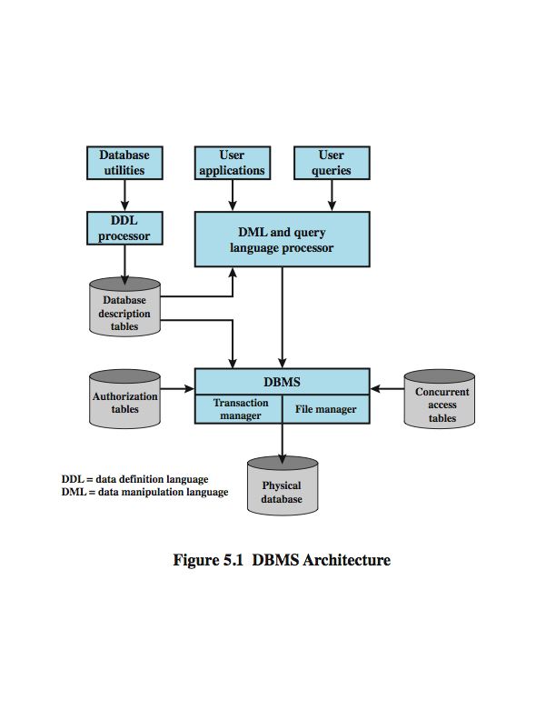
2. Database relasional dan SQL
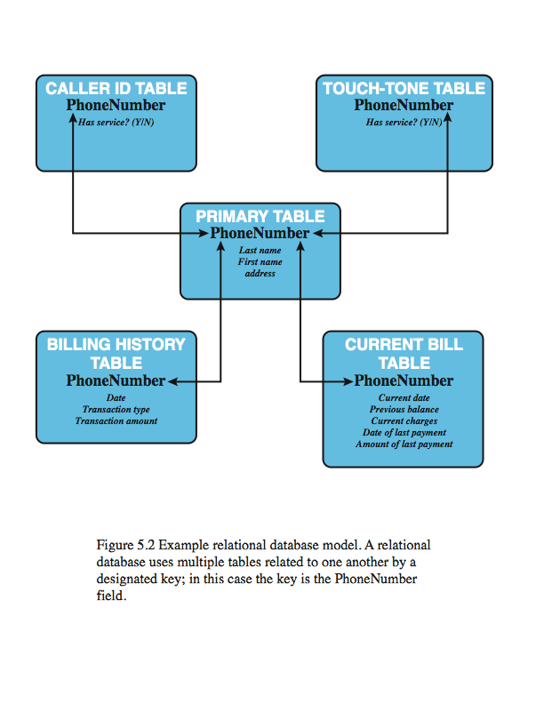
| Istilah | Artinya (gampang) |
|---|---|
| Relation / table | tabel baris × kolom |
| Tuple / row | satu baris (satu data) |
| Attribute / column | satu kolom (satu jenis data) |
| Primary key | kolom dengan nilai unik, penanda satu baris (seperti NIM) |
| Foreign key | kolom yang menunjuk primary key tabel lain, nilainya boleh berulang |
| View | tabel virtual berisi hasil query. Sering dipakai untuk membatasi apa yang boleh dilihat user |
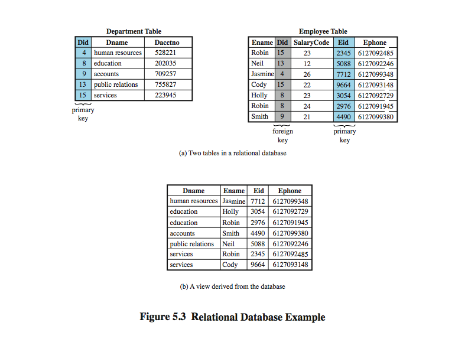
SQL = bahasa standar untuk mendefinisikan, mengolah, dan meng-query data relasional. Perintah untuk mengambil data: SELECT.
3. SQL Injection (SQLi)
Salah satu serangan jaringan yang paling umum dan berbahaya. Penyerang menyisipkan perintah SQL lewat kolom input. Akibatnya: data diubah atau dihapus, menjalankan perintah OS, atau serangan DoS. Triknya: menutup teks lebih awal, lalu menambah perintah sendiri.
SELECT fname FROM student WHERE fname = '[input user]';Input penyerang:
John'; DROP table Course;--Hasilnya: teks ditutup setelah John, perintah
DROP table Course ikut jalan, dan -- membuat sisa query jadi komentar.Contoh lain (tautology):
SELECT info FROM user WHERE name='$name' AND pwd='$pwd'. Penyerang isi name dengan ' OR 1=1 --. Kondisi 1=1 selalu benar, jadi login lolos tanpa password.| Kategori | Jenis | Ciri |
|---|---|---|
| In-band (hasil diterima lewat jalur yang sama) | Tautology | kondisi dibuat selalu benar |
| End-of-line comment | sisa query dibuat jadi komentar | |
| Piggybacked queries | menempel query tambahan di belakang query sah | |
| Inferential | Illegal / logically incorrect query | tidak ada data dikirim langsung; penyerang menyimpulkan struktur database dari perilaku server |
| Out-of-band | - | dipakai kalau pengambilan data dibatasi tetapi koneksi keluar dari server longgar |
4. Kontrol akses database
DBMS menganggap user sudah login, lalu memberi hak akses (create, insert, delete, update, read, write) pada seluruh database, tabel, atau baris/kolom tertentu. Siapa yang mengatur hak itu:
| Kebijakan | Artinya |
|---|---|
| Centralized | hanya beberapa user istimewa yang boleh memberi/mencabut hak |
| Ownership-based | pemilik tabel yang memberi/mencabut hak |
| Decentralized | pemilik boleh memberi hak untuk memberi hak ke orang lain |
GRANT SELECT ON ANY TABLE TO john = beri hak baca.REVOKE SELECT ON ANY TABLE FROM john = cabut hak baca.Hak umum: SELECT, INSERT, UPDATE, DELETE, REFERENCES.
WITH GRANT OPTION = penerima boleh meneruskan hak itu. PUBLIC = semua user.Cascading authorization: hak yang diteruskan itu menyebar seperti rantai, dan kalau dicabut, ikut tercabut ke bawah. Contoh gambar: kalau Bob mencabut hak David, hak turunan yang hanya berasal dari Bob ikut hilang.
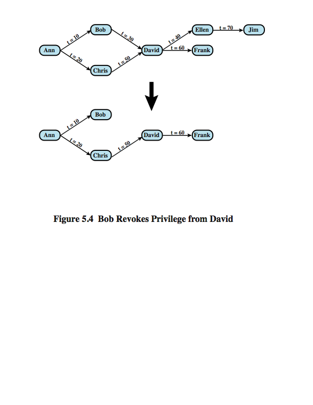
5. RBAC di database
RBAC (role-based access control) = hak akses diberikan ke peran (role), lalu user ditempatkan pada peran. Cocok untuk database karena satu database melayani banyak aplikasi. Ada 3 jenis user: application owner (pemilik objek, boleh memberi role ke end user), end user (memakai lewat aplikasi, tidak memiliki), dan administrator (mengelola sebagian atau seluruh database). RBAC harus bisa membuat/menghapus role, menentukan izin role, dan menetapkan/mencabut user dari role.
6. Inference
Inference = user memakai query yang diizinkan, lalu menyimpulkan informasi yang tidak diizinkan. Jalur untuk itu disebut inference channel. Masalahnya: gabungan beberapa data tak sensitif bisa jadi sensitif.
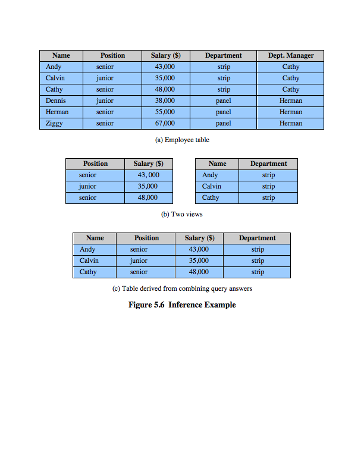
Dua cara mencegahnya: ubah desain database/kontrol akses (mis. pecah tabel), atau awasi query dan tolak/ubah kalau terdeteksi inference channel.
Untuk statistical database (hanya boleh melihat statistik):
| Pendekatan | Artinya |
|---|---|
| Query restriction | query yang berisiko ditolak, jawaban yang diberi tetap akurat. Contoh: query size restriction, query hanya boleh jika jumlah record hasilnya antara k dan N − k (N = jumlah record). |
| Perturbation | semua query dijawab, tetapi jawabannya diperkirakan (ditambah noise). Kelemahan: akurasi turun dan bisa bias. |
7. Enkripsi database
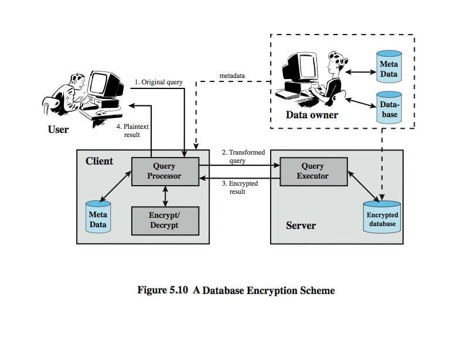
Database dilindungi berlapis: firewall, autentikasi, kontrol akses OS, kontrol akses DBMS, lalu enkripsi. Enkripsi bisa di tingkat: seluruh database (tidak fleksibel), field (sederhana tapi kurang fleksibel), atau record (baris) / kolom (paling baik, memakai attribute index supaya pencarian cepat, walau indeks bisa membocorkan urutan perkiraan).
4 pihak: data owner (pemilik data), user (pengirim query), client (front-end yang mengubah query user menjadi query atas data terenkripsi), dan server (menyimpan data terenkripsi, tanpa kunci). Alur: (1) user kirim query → (2) client mengenkripsi lalu kirim ke server → (3) server memproses dan mengirim hasil terenkripsi → (4) client mendekripsi dan menampilkan ke user.
Tes diri (tutup jawaban dulu, coba jawab sendiri)
1) Apa kepanjangan CIA, dan apa dua tujuan tambahan dari slide?
Lihat jawaban
Confidentiality, Integrity, Availability. Tambahan: Authenticity dan Accountability.2) Data nilai mahasiswa dibaca orang yang tidak berhak. Aspek CIA apa yang dilanggar?
Lihat jawaban
Confidentiality (kerahasiaan).3) Perawat memalsukan info alergi pasien. Aspek apa yang dilanggar, dan aspek lain apa yang dibutuhkan untuk melacak pelakunya?
Lihat jawaban
Integrity. Untuk melacak pelakunya dibutuhkan Accountability.4) Website kampus mati seharian karena dibanjiri permintaan. Aspek apa yang terganggu, dan jenis serangan aktif apa itu?
Lihat jawaban
Availability. Serangan: denial of service (DoS).5) Sebutkan 2 serangan pasif dan 4 serangan aktif.
Lihat jawaban
Pasif: release of message contents, traffic analysis. Aktif: masquerade, replay, modification of messages, denial of service.6) Isi pesan sudah dienkripsi tetapi penyerang tetap tahu siapa berkomunikasi dengan siapa. Serangan apa, dan apa alat untuk melawannya?
Lihat jawaban
Traffic analysis. Alatnya: traffic padding.7) Sebutkan 6 security service.
Lihat jawaban
Authentication, access control, data confidentiality, data integrity, nonrepudiation, availability.8) Apa bedanya vulnerability, threat, dan attack?
Lihat jawaban
Vulnerability = kelemahan. Threat = potensi bahaya yang bisa memanfaatkannya. Attack = serangan yang benar-benar terjadi.9) Sebutkan 4 kelompok threat consequence.
Lihat jawaban
Unauthorized disclosure, deception, disruption, usurpation.10) Pada attack tree, apa beda node AND dan OR?
Lihat jawaban
AND: semua anak harus tercapai. OR: cukup salah satu.11) Apa hasil dari input ' OR 1=1 -- pada query login, dan jenis SQLi-nya?
Lihat jawaban
Kondisi jadi selalu benar sehingga login lolos. Jenisnya tautology (in-band).12) Apa itu inference? Sebutkan satu cara mencegahnya.
Lihat jawaban
Menyimpulkan data yang tidak diizinkan dari query yang diizinkan. Cara: ubah desain database/kontrol akses, atau pantau query dan tolak yang berbahaya.13) Beda query restriction dan perturbation.